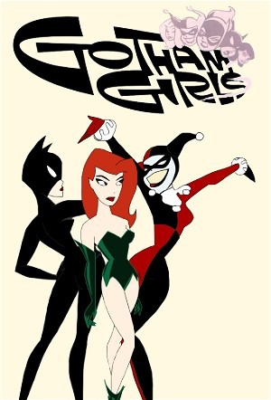

Gotham Girls (2000)
ActionAnimationComedyCrimeDramaFamily
| Year | 2000 |
|---|---|
| Rating | TV-Y7 |
| Status | Completed |
| Seasons | 4 |
| Episodes | 33 |
| Genre | Action, Animation, Comedy, Crime, Drama, Family |
Gotham Girls, an online Flash-animated series, debuted on July 27th, 2000, spotlighting Batgirl, Harley Quinn, Poison Ivy, Catwoman and other female Gothamites. If you've never checked out the Gotham Girls, but are an avid follower of the Batman animated shows, you'll immediately recognize some familiar voices. Reprising their roles are Tara Strong (Batgirl), Arleen Sorkin (Harley Quinn), Diane Pershing (Poison Ivy), and Adrienne Barbeau (Catwoman).
Episodes
Specials
| # | Title | Air Date | Synopsis |
|---|---|---|---|
| 1 | Volume 1 | — | |
| 2 | Volume 2 | — | |
| 3 | Volume 3 | — |
Season 1
| # | Title | Air Date | Synopsis |
|---|---|---|---|
| 1 | The Vault | 2000-07-27 | Poison Ivy attempts to crack a safe, but her concentration is broken because of Harley Quinn's annoyance. |
| 2 | Lap Bat | 2000-08-10 | Batgirl attempts to recover a statue stolen by Catwoman, rumored to hold mystical powers. |
| 3 | Trick or Trick | 2000-08-24 | After Harley Quinn receives a present from Poison Ivy, Harley sets out to get her one in return. |
| 4 | A Little Night Magic | 2000-09-07 | Zatanna decides to use some of her magical powers while on a walk at night. |
| 5 | Precious Birthstones | 2000-09-14 | Catwoman decides to steal a necklace worth one million dollars on her birthday. |
| 6 | More Than One Way | 2000-10-05 | When Harley Girl, Poison Ivy and Catwoman all go hunting for the same Belgian miniature a true catfight breaks out. |
| 7 | Pave Paradise | 2000-10-19 | Poison Ivy takes her revenge out on the mayor when he plans to pave over paradise and put up a parking lot. |
| 8 | The Three Babes | 2000-11-16 | While in prison Harley wants Ivy to tell her a fairy tale and Poison tells her the story of Batgirl and the three babes. |
| 9 | The Gardener's Apprentice | 2000-11-30 | When Poison Ivy goes out of town, Harley has a rough time looking after her plants. |
| 10 | Lady-X | 2000-12-14 | Batgirl, Catwoman, Harley Quinn, and Poison Ivy team up to stop the crime spree of the mysterious Lady X |
Season 2
| # | Title | Air Date | Synopsis |
|---|---|---|---|
| 1 | Hold That Tiger | 2001-06-05 | Catwoman and Zatanna join forces to save a Tiger. |
| 2 | Miss Un-Congeniality | 2001-06-19 | Catwoman, Poison Ivy, Harley Quinn, and a mysterious fourth contest compete in a 'Miss Criminal Mastermind' showcase. |
| 3 | Strategery | 2001-07-03 | After losing to Batgirl once again, Poison Ivy decides to teach Harley Quinn about proper strategy |
| 4 | Baby Boom | 2001-07-17 | While on a museum heist, Harley Quinn is accidentally transformed into a baby via Poison Ivy's special plant toxins. |
| 5 | Cat -n- Mouse | 2001-07-31 | One night during a robbery, Catwoman runs into another thief who matches her in every way |
| 6 | Bat'ing Cleanup | 2001-08-14 | While talking to her father on the phone, Batgirl recalls her night of crime fighting. |
| 7 | Catsitter | 2001-08-28 | Looking for something new to do, Harley Quinn offers to babysit one of Catwoman's baby tigers. |
| 8 | Gotham Noir | 2001-09-11 | Harley Quinn is a private investigator who attempts to solve a missing persons crime, with a unique twist. |
| 9 | Scout's Dis-Honor | 2001-09-25 | After seeing how a group of girl guides can make a profit, Harley Quinn decide's to open her own version.. |
| 10 | I'm Badgirl | 2001-10-09 | After being doused with some of Poison Ivy's special toxin, Batgirl turns to a life of crime. |
Season 3
| # | Title | Air Date | Synopsis |
|---|---|---|---|
| 1 | Ms.-ing in Action | 2002-07-16 | Catwoman is on the run, and Batgirl is right behind her. It's chase, run, jump through the rooftops and streets of Gotham until, finally, Batgirl commandeers a Taxi and orders the driver to catch Catwoman. Suddenly the T |
| 2 | Gotham in Pink | 2002-07-30 | Gotham City launches an investigation into the mysterious disappearance of the Male Population. But it's a vicious catfight as the acting female Heads of State argue for political power. The female Commissioner appears t |
| 3 | Hear Me Roar | 2002-08-13 | Batgirl surprises Harley and Ivy as they ransack the Dangerous Evidence Vault. Harley & Ivy serve up explosive surprises from the buffet table of supervillian technology stored, but Batgirl is holding her own against unt |
| 4 | Gotham in Blue | 2002-08-27 | Batgirl surprises Catwoman rifling through a computer belonging to a Detective Reesdale a woman who disappeared at the same time as the men. Working together they discover the missing Detective's secret which may help |
| 5 | A Cat in the Hand | 2002-09-10 | Harley and Ivy escape, but Catwoman is arrested and blamed for the three day disappearance of the men of Gotham. Batgirl – as Barbara – tries to convince her father of Catwoman’s innocence, but he is unyielding. Harley a |
| 6 | Jailhouse Wreck | 2002-09-24 | Batgirl pays a visit to Commissioner Gordon to express her concern over his new “Get Tough On Costumed Villains” policy. She suspects that he is experiencing some kind of post-traumatic shock because of the three days he |
| 7 | Honor Among Thieves | 2002-10-08 | Despite the Commissioner’s “Get Tough” policy, Harley, Ivy and Catwoman still have to make a living. Carefully they go about their business: The business of crime! But one by one, despite their care, they are captured by |
| 8 | No, I'm Batgirl!!! | 2002-10-22 | Detective Montoya is arguing with Commissioner Gordon when the call comes in that Batgirl has been spotted on the North Side. As they head off, Batgirl is sighted on the West Side. Then the South Side. Each of these “Bat |
| 9 | Signal Fires | 2002-11-05 | Detective Reesdale assumes Barbara has the Commissioner’s permission and gives her the "grand tour" of the vault. Reesdale lets slip some information that disturbs her. Barbara secretly steals some of the evidence confis |
| 10 | Cold Hands, Cold Heart | 2002-11-19 | The Commissioner, twitching in the Batsignal, explodes into a pile of gears and wheels and microchips: He’s a Robot! Who is behind this robotic Commissioner? None other than the Commissioner’s supposedly loyal assistant, |